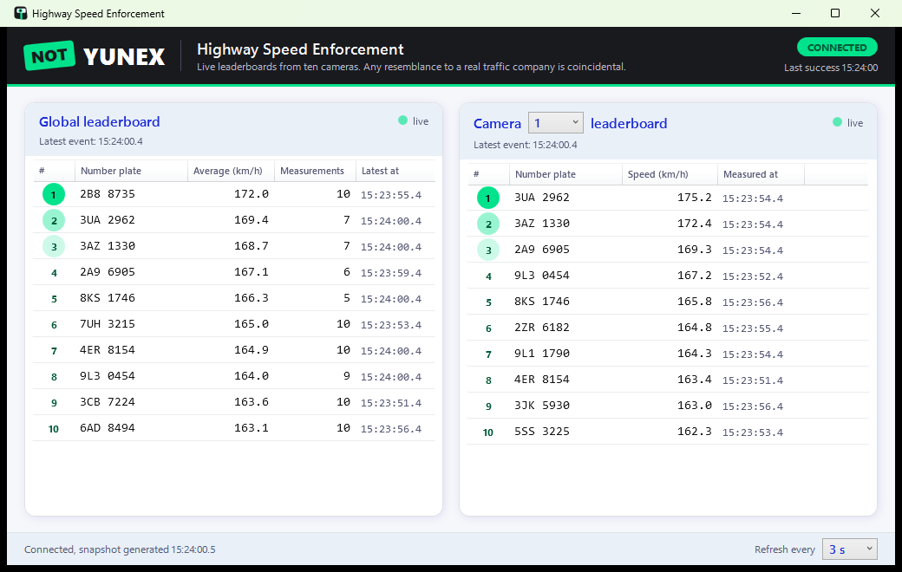
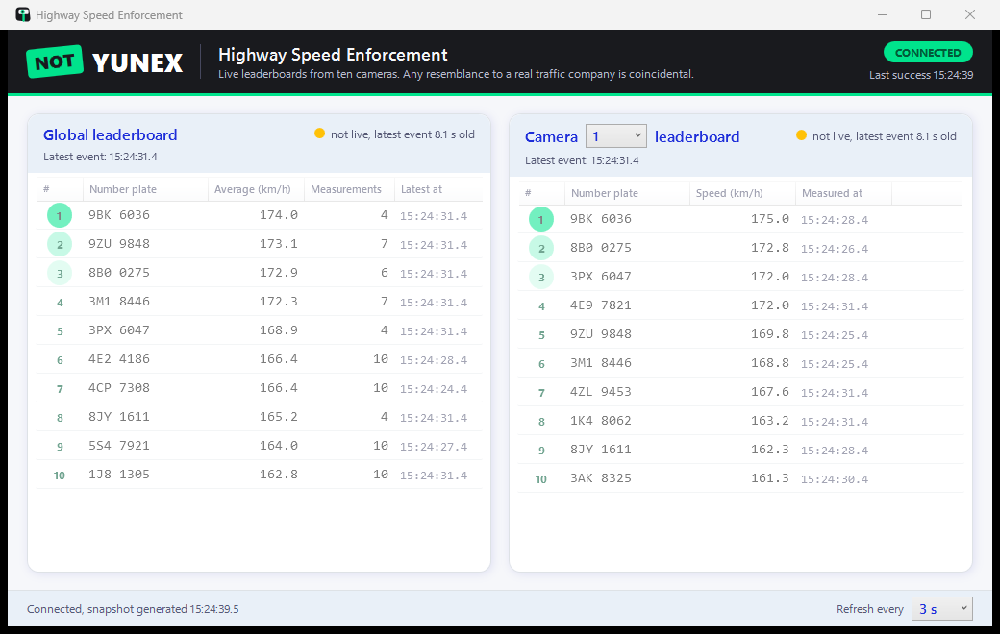
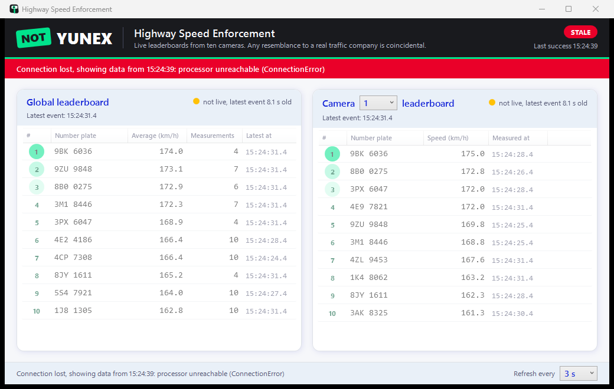
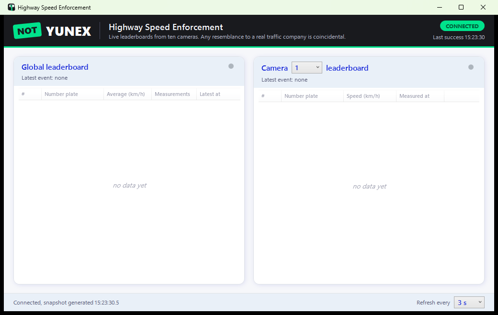
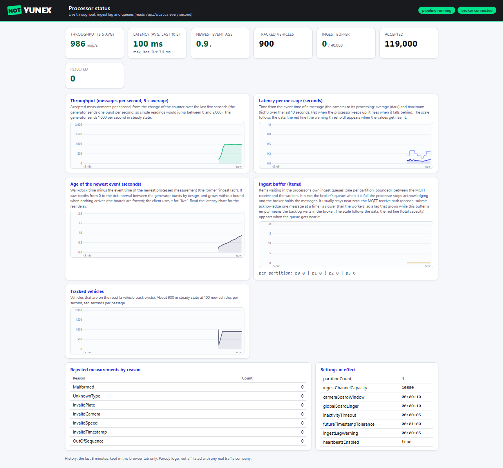

A page for viewers that do not render the images of the README. Open it in any browser; the images are in this folder.
The client (WPF)

Live. The generator runs: both boards are live (green dots), global top 10 by cumulative average and the top 10 of the selected camera.

Not live. The generator stopped: the boards freeze at their last event time, are dimmed and say how old the data is.

Stale. The processor is unreachable: the last data stay, a red banner shows the time of the last success, polling continues.

No data yet. The processor has just started (also the state after it recovers from a restart): empty boards, connected.
The processor status page (/ui)

Status page. Throughput (5 s average), latency per message, the age of the newest event (it saw-tooths by design), the ingest buffer and the tracked vehicles, taken with a running generator.